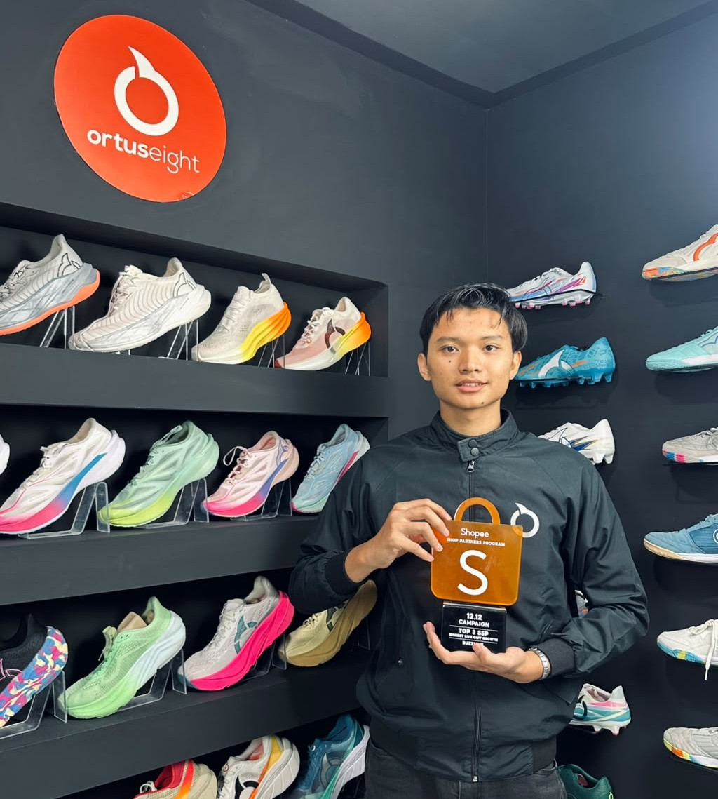

Tentang saya

Saya Danis Setiyawan, mahasiswa Program Studi Informatika Universitas Islam Indonesia. Sebelumnya saya belajar TKJ dan tertarik pada jaringan komputer, lalu memperluas minat ke pengembangan web, UI/UX, Java, dan data science. Saat ini saya sedang memperkuat kemampuan front-end, CSS, pemrograman, dan jaringan sambil mengembangkan pengalaman kerja sebagai Host Coordinator Buzzlive
| Kegiatan | Peran | Waktu |
|---|---|---|
| Praktikum PABW | Peserta | |
| Sistem Jaringan Dan Komputer | Belajar | |
| Mencari Lomba/ seminar tentang program IT | Peserta |
Karya saya
Tidak ada proyek pada kategori itu.
Hubungi saya
Isi formulir berikut. Semua kolom bertanda wajib harus diisi.
Perjalanan saya
- - mulai menempuh pendidikan di SMK pada bidang Teknik Komputer dan Jaringan (TKJ)
- - melanjutkan pendidikan di Program Studi Informatika, Universitas Islam Indonesia
- - mulai mendapatkan pengalaman kerja part-time sebagai Host Coordinator dan Live Host di Buzzlive
Keterampilan
Tanya jawab
Apa yang membuat saya tertarik pada dunia teknologi?
Sejak belajar di jurusan TKJ saat SMK, saya mulai tertarik pada komputer dan jaringan. Ketertarikan tersebut terus berkembang hingga saya memilih melanjutkan studi di bidang Informatika
Mengapa saya memilih Informatika?
Saya ingin memperluas pengetahuan yang sebelumnya saya pelajari di bidang jaringan ke bidang lain seperti pemrograman, pengembangan web, UI/UX, dan data science
Apa yang sedang saya kembangkan saat ini?
Saya sedang membangun portofolio pribadi di linkedln dan memperdalam kemampuan pemrograman serta mengembangkan keterampilan di bidang web dan jaringan komputer